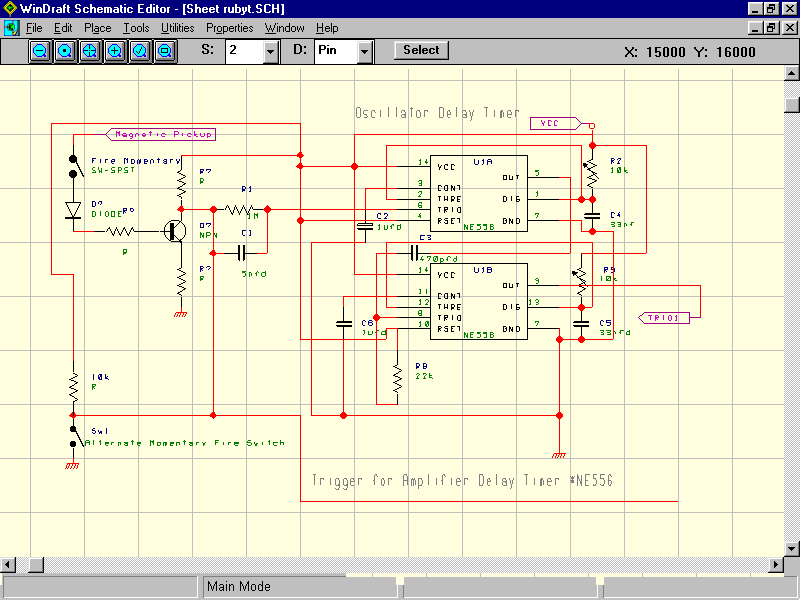
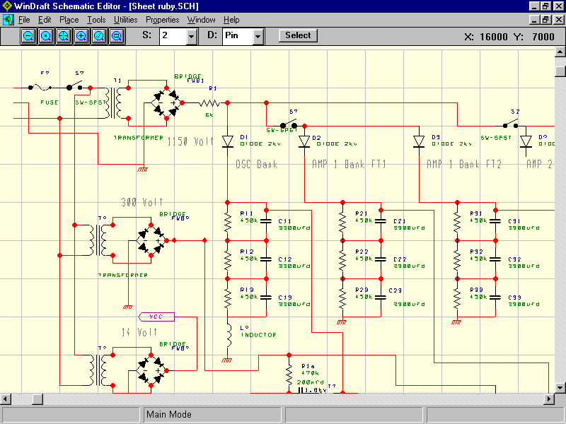
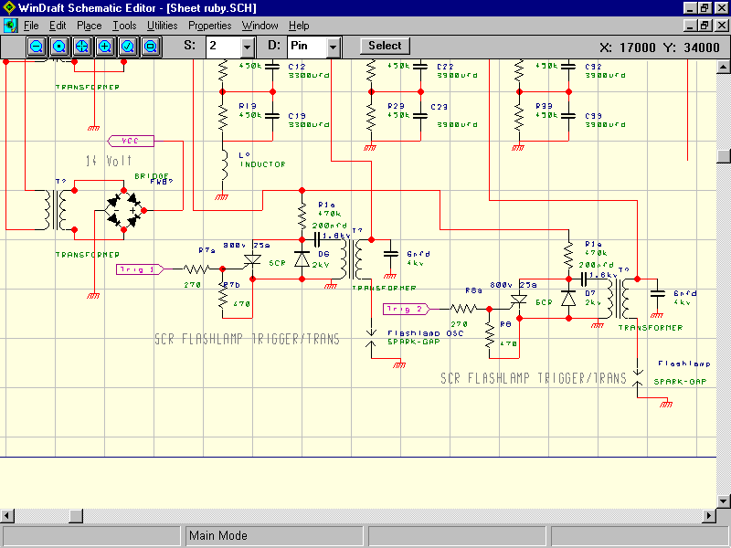
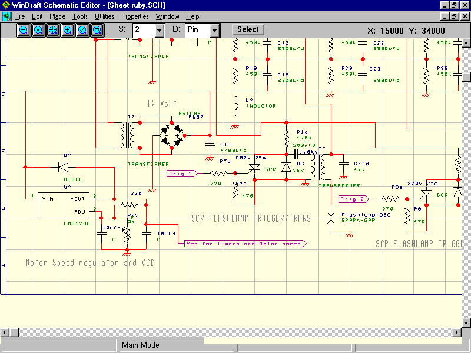
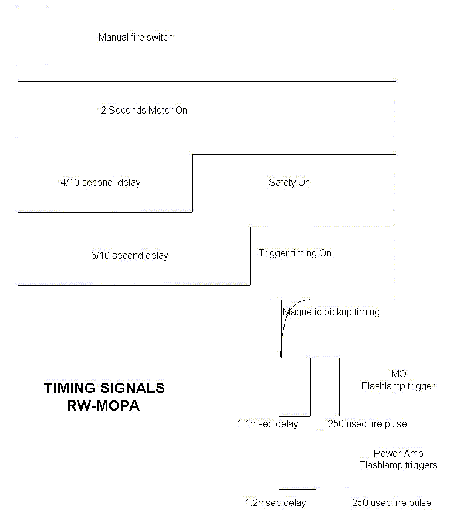

Timer Circuit for Tank Laser

Not shown above is another timer circuit for the amplifier delay. The lead is shown would go to another 1meg resistor and 5nfd cap then to pin 6 of the NE556 (amplifier delay circuit not shown). U1A (1/2 of the 556) variable resistor changes the delay time and U1B variable resistor changes the pulse width used to fire the SCR triggers.
See The Power Supply circuit below: Note that the switches shown on each leg of the amp charging banks where isolated above ground and never operated with the power on inorder not subject a person to potential shock hazard and arcing of the switch contacts. Instead these switches were only manipulated after the cap bank voltage had depleted and the power supply was off.

Below is the rest of the Power supply that includes the SCR trigger circuits for the Flashlamp and Series Injection Transformer.

Below is the adjustable voltage regulator on the 14volt supply. Since the motor drawns quite amount of current for the LM317, the regulator should be mounted to a fair size heatsink.

A suggestion is to include quite a few despike caps on the timer circuit. The motor must run and settle down before you allow the 300volts to the SCR triggers inorder to prevent accidental firing of the laser due to the trigger NE556 will pickup the motor start flunctuations. I solved this problem as follows: My push to fire switch triggers the following NE556 delay timers/relays to begin at the same time: A NE555 and relay to start the motor with a 2 second runtime, a NE556 and relay with delay to make switch contact for the 300v to SCR power and finally a NE556 and relay with delay to close the switch for the magnetic pickup to trigger the OSC and AMP timers. Refer to timing chart below.
